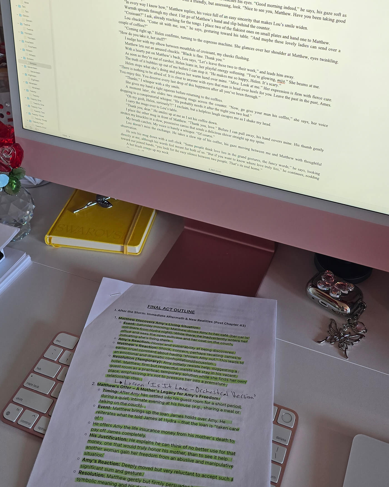
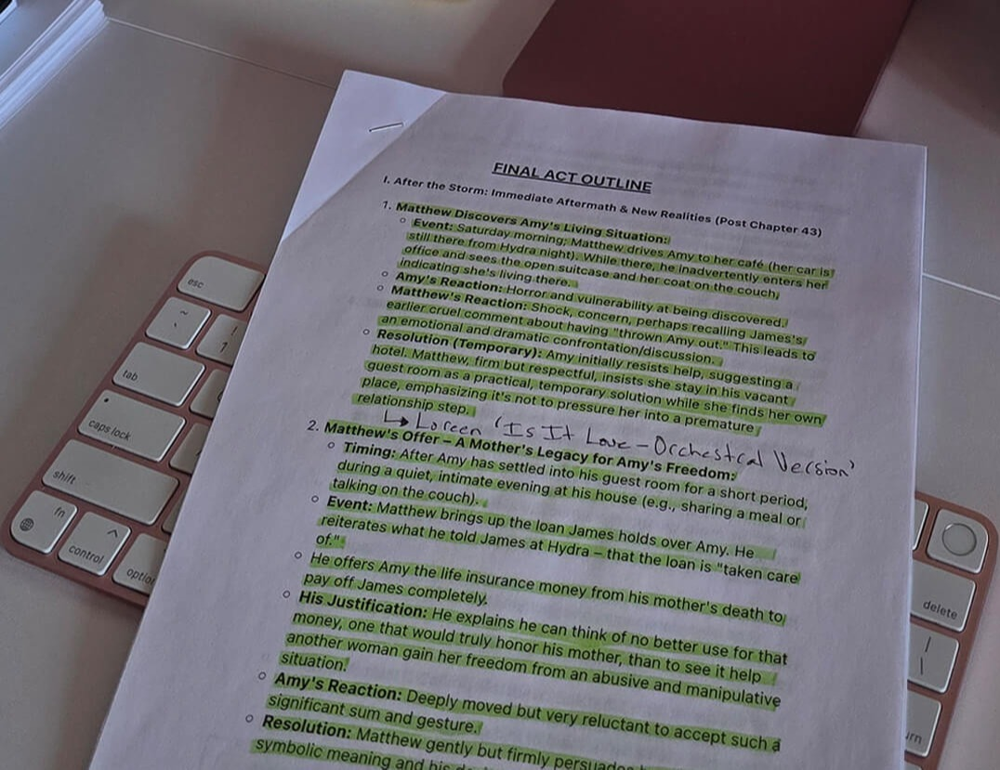
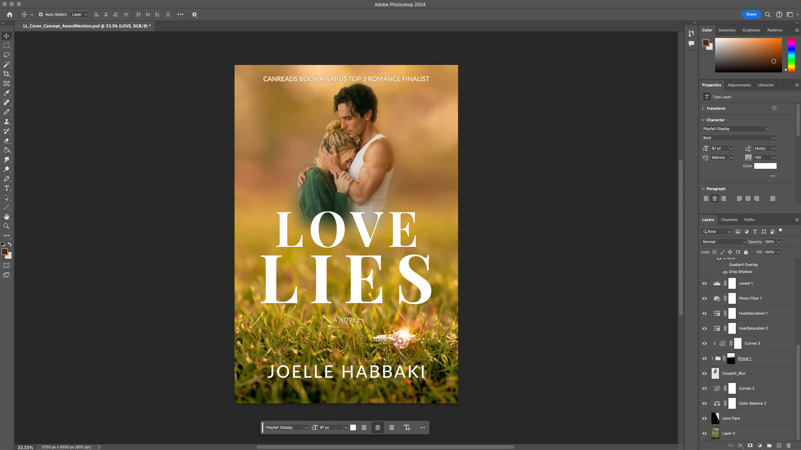
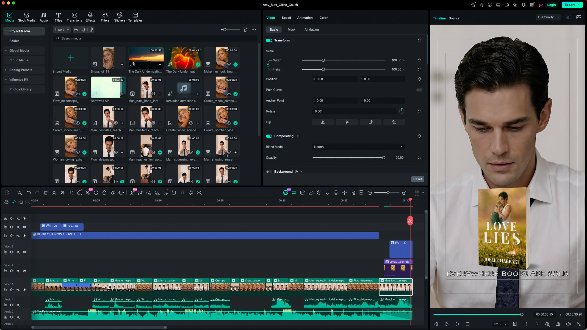
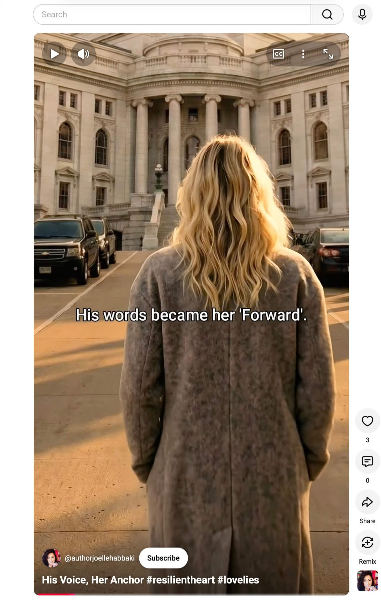
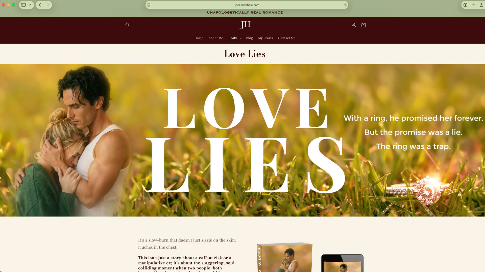
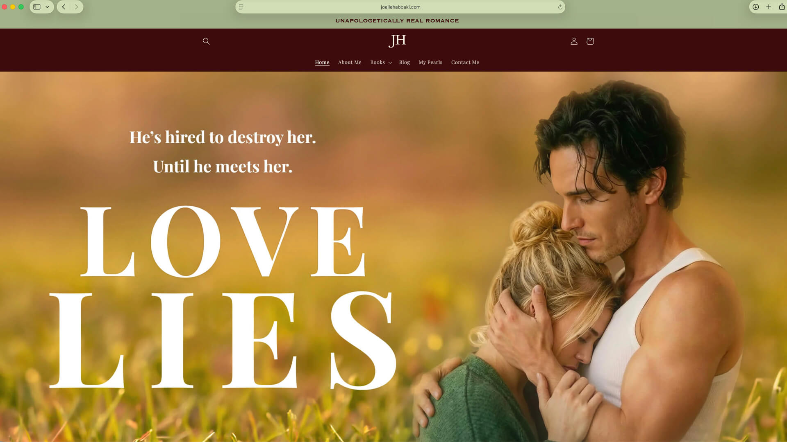

At Resilient Heart Press, the manuscript is only the beginning of how a story meets the world. Through design, moving image, original music and digital storytelling, each book is given a creative life beyond the page.

Every story begins somewhere private: a sentence, a character, an unresolved question. Long before there is a book cover, a book trailer, a song or a digital world built around it, there is the manuscript and the quieter work of making the story strong enough to stand on its own.
At Resilient Heart Press, that is where every project begins. The author writes the book. The story, characters and emotional world are established on the page first.
Once the manuscript is ready, the work turns outward.
Cover design gives the story its first visual identity. Motion picture introduces atmosphere, tension and rhythm. Original song offers another emotional point of entry. Websites and digital media bring those elements together into a world readers can encounter before they ever open the book.
Modern creative technology has expanded what an independent storyteller can build around a novel. Resilient Heart Press embraces those tools not to replace authorship, but to give the work more ways to reach people, create curiosity and invite them into the story.
Before a story can become visual, cinematic or musical, it has to work in its first form: the manuscript. Characters have to feel real. Emotional turns have to be earned. The structure has to hold. No cover, trailer or song can do that work for the book.
While editing Love Lies, Habbaki would move sections of the manuscript away from her primary computer and onto her iPad and reMarkable. The change in device and setting created just enough distance from pages she had read countless times, helping familiar passages feel unfamiliar again. Sentences that had become easy to skim could suddenly be seen more clearly.
At Resilient Heart Press, everything created around a book has to be grounded in a novel that can stand on its own.

A story may ultimately be remembered for how it made a reader feel, but that emotion has structure beneath it. Working outlines help track character choices, consequences, turning points and the progression that allows an emotional moment to land when it should.
For the final act of Love Lies, Habbaki mapped the changing circumstances around Amy, Matthew and James alongside the emotional decisions driving the ending. This ensures that what the reader eventually feels has been properly built.
That foundation matters beyond the manuscript too. Once a novel is complete, Resilient Heart Press begins translating its emotional identity into the creative work that will introduce it to the world. The book cover, book trailer, original song and digital presentation may speak different languages, but they are all drawing from the same source.
For Love Lies, that process began with one of the novel’s most loaded symbols: an engagement ring abandoned in the grass. On its own, the image suggests romance, commitment and permanence. Within Amy’s story, those meanings become complicated by betrayal, control and the collapse of the future she thought she had.
That tension became the starting point for the cover. From there, colour, atmosphere, character imagery and typography were gradually layered into a visual identity designed to communicate something essential about the novel before a reader knows the story within.
The finished Love Lies cover appears as a single image, but it was built from separate visual elements that had to be made to belong to the same world. In Photoshop, masks, colour corrections, lighting adjustments, retouching and compositing gradually brought those pieces into alignment.
The work is technical, but the judgment behind it is creative. How warm should the light feel? How prominently should the ring remain once Amy and Matthew enter the frame? At what point does an assembled image stop looking assembled?
The aim is not simply polish. It is coherence. By the time the cover reaches a reader, the construction should recede and the emotional promise of the novel should be what remains.

For Love Lies, moving from a still image into video meant translating the same visual and emotional identity into sequence. The aim was not to retell the novel, but to suggest its tension, chemistry and stakes in a form that could be experienced in seconds.
Inside Filmora, clips, sound, pacing and transitions were assembled one decision at a time. How long an expression remains on screen can change its meaning. The image that follows can deepen a moment or redirect it. Music can heighten tension before a single line of dialogue has done so.
The finished trailer is meant to feel continuous, but the editing timeline reveals the construction beneath it. At Resilient Heart Press, that moving-image layer is part of how each book is presented to the world, giving readers another way to encounter its atmosphere and emotional promise before they reach the novel itself.


Shattered is returning through Resilient Heart Press in a newly revised fifth-anniversary edition. As part of that return, the world surrounding Edward and Emma’s story is expanding too, including an original song written specifically for the novel.
At Resilient Heart Press, original songs become part of the creative world built around each book. For Shattered, the song is being shaped to carry the story’s longing, tension and restraint without retelling its plot. The challenge is to create something that feels emotionally rooted in the novel while still standing on its own as a complete song.
The working pages of songwriting capture that process. Lines are crossed out. Structure is still being questioned. Notes about arrangement, restraint and how much should remain unsaid sit beside lyrics that are still evolving. Like the cover and trailer, the finished song will become another way for readers to encounter the emotional world of Shattered before entering the novel itself.
The song does not retell the novel. It carries its emotional world into another form.
A novel has access to interior thought, memory, pacing and hundreds of pages in which to unfold. A book cover works through composition and symbolism. A book trailer adds movement and sound. An original song carries emotion in a form entirely its own.
Each medium communicates differently, but all of them begin with the same source. The creative work lies in understanding what belongs to the story, then finding the form best suited to express it without distorting what made it meaningful in the first place.
At Resilient Heart Press, the creative work surrounding a novel does not exist in isolation. The book cover establishes its visual identity. The book trailer carries that identity into motion. Original song adds another emotional dimension. The website brings those elements together into a larger world through which the book can be discovered.
For Love Lies, the author website extends the same visual language established by the cover across character imagery, colour, typography, motion and story-led messaging. The result is an introduction to its atmosphere, tension and emotional world.
Together, these elements give the story more than one way to reach a reader while keeping the book itself at the centre of the experience.


At Resilient Heart Press, every book is given a creative world beyond the page. Cover designs, book trailers, original songs and digital storytelling are not treated as extras. They are part of how each title is shaped for the world it is entering, giving the story more ways to be seen, heard and discovered.
The tools available to create that world will continue to evolve. Image generation can expand what is visually possible. Video technology can bring characters and atmosphere into motion. Digital production can place increasingly sophisticated creative capabilities in the hands of an independent storyteller. But greater capability does not make the creative process effortless. It demands greater fluency, stronger judgment and a deeper understanding of how to direct the tools well. New technology may lower certain barriers to entry, but using it with precision is a skill in itself. That is especially true of generative technology. The idea of a single prompt producing a perfect result could not be further from the reality of serious creative work. As the tools become more advanced, shaping, refining, rejecting, combining and redirecting their output requires more skill, not less.
A tool can generate an image, but it cannot know why the abandoned ring matters. It can help create motion, but it cannot decide whether a cut arrives too soon. It can contribute to the production of a song, but it cannot know when a lyric has said more than Edward and Emma’s story can bear.
Those decisions remain with the creator. They are shaped by an understanding of the characters, the emotional architecture of the novel and the reason the work exists in the first place.
Much of that judgment disappears from the finished result. The layer removed. The image rejected. The clip shortened. The lyric rewritten. The idea abandoned because, however polished it may have been, it did not belong to the story.
Technology may continue to change what can be created around a book. What does not change is where those decisions begin.